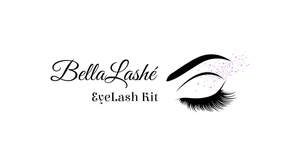

Trade Mark Journal No.2025/011 14 March 2025
UK00004139963 20 December 2024 (3,21)

- Class 3
- Cosmetic preparations for eye lashes; Eye concealers; Eye makeup; Eye make-up; Eye shadows; Eye cosmetics; Eye shadow; Eye creams; Eye liner; Eyelashes; Eye gel; Eye pencils; Eye cream; Eye stylers; Eye lotions; Eye sticks; Eye make-up removers; Eyes make-up; Eye correction serum; Eye gels; Eye makeup remover; Cosmetic eye pencils; Eyebrow mascara; Cosmetics in the form of eye shadow; Eye brightening correctors; Gel eye masks; Under eye correctors; Eye wrinkle lotions; Cosmetic eye gels; Eyelid shadow; Skin, eye and nail care preparations; Eye make up remover; Colour cosmetics for the eyes; Eyelash tint; Eyes pencils; Liners [cosmetics] for the eyes; Adhesives for false eyelashes, hair and nails; Artificial eyelashes; Long lash mascaras; Eyelashes (False -); False eyelashes; Cosmetics for eye-lashes; Eyelid doubling makeup; Hair mascara; Eyelid pencils; Cosmetic creams for firming skin around eyes; Eye compresses for cosmetic purposes; Eyeliner; Gel eye patches for cosmetic purposes; Mascara; Eyebrow cosmetics; Eyelash dye; Eyelashes (Cosmetic preparations for -); Cosmetic preparations for eyelashes; Creams (Non-medicated -) for the eyes; Fragrance sachets for eye pillows; Eye care products, non-medicated; Lip makeup; Cosmetics for eye-brows; Eyebrows [false]; Cleansing products for the eyes; Eyebrow pencils; Pencils (Eyebrow -); Face blusher; Eyebrow colors; Facial concealer; Eyebrow gel; Eye-shadow; Lip tints; Skin make-up; Cosmetic pencils for cheeks; Eyebrow powder; Lip gloss palettes; Make-up for the face; Eyeliner pencils; Face glitter; Lip cosmetics; Eyeliners; Tints for the hair; Face and body glitter; Double eyelid tapes.
- Class 21
- Eye make-up applicators; Applicators for applying eye make-up; Eyelash brushes; Eyelash combs; Eyebrow brushes; Eyeliner brushes; Mascara brushes; Lip brushes; Eyelash Separators.
SUQ1 LTD